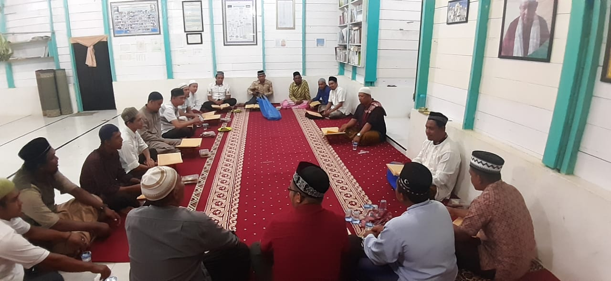

Majelis Taklim di Dunia Modern
Jumat, 6 Maret 2015 00:34
Oleh: KH Husin Naparin
PENGURUS Majelis Ulama Indonesia (MUI) Provinsi Kalimantan Selatan, akhir-akhir ini mengadakan silaturahim dengan pengurus majelis taklim dan para da’iyah se-Kalsel, membahas pentingnya majelis taklim pada zaman sekarang untuk ditata sebaik-baiknya, karena disinilah pertahanan terakhir dakwah Islamiyah.
Sepanjang sejarah dakwah Islamiyah, peranan majelis taklim tidak diabaikan. Hal ini terbukti pada masa-masa pertama perjalanan dakwah itu sendiri; dimana Islam tersiar melalui majelis taklim.
Majelis taklim yang pertama adalah majelis taklimnya Rasulullah saw di sebuah rumah yang disediakan oleh seorang sahabat, Al-Arqam bin Abil Arqam. Pada zaman modern pun majelis taklim cukup berperan seperti yang terdapat di ibu kota Jakarta, di mana majelis taklim telah mewarnai hiruk pikuknya kota Jakarta; dahulu bila disebut Jakarta, terbayang image kemaksiatan. Sekarang, Jakarta bukan lagi kota maksiat tetapi kota serba ada; dijuluki "dari sajadah sampai haram jadah ada di Jakarta".
Apakah itu majelis taklim? Ia adalah lembaga pendidikan Islam non-formal, bertujuan membina dan mengembangkan hubungan harmonis antara manusia dengan Allah swt, manusia dengan sesamanya dan lingkungannya; ia berfungsi membentuk masyarakat yang bertakwa kepada Allah swt, disamping sebagai tempat rekreasi rohani yang dilaksanakan dengan serius tapi santai; ajang silaturahim yang dapat menghidup suburkan dakwah dan ukhuwah islamiyah; sebagai sarana dialog berkesinambungan antara ulama/umara dan umat; sebagai media penyampaian gagasan-gagasan yang bermanfaat menyangkut pembangunan dan pembinaan umat.
Majelis taklim yang tertata memiliki, Pertama, pengurus dengan manajemen yang rapi, bisa berbentuk kepengurusan tunggal yang dimiliki oleh seseorang atau kepengurusan organisasi yang dimiliki oleh seseorang tetapi dikelola oleh satu tim kepengurusan, atau kepengurusan yang diatur bersama dengan masyarakat.
Pengurus harus memiliki keikhlasan, keuletan dan kesabaran serta kepiawaian; harus dapat meraih simpati jemaah, donatur, simpatisan; harus dapat mengatur administrasi, alokasi waktu dan hal-hal lain terkait kelancaran kegiatan majelis taklim; disamping adanya pengaderan.
Kedua, guru yang bijaksana dengan metode penyampaian yang sesuai situasi dan kondisi, dengan hikmah mau’izah dan jidal yang baik; pengalokasian waktu yang baik; adanya keseimbangan antara keseriusan dan kesantaian, kesamaan persepsi antara guru yang mengajar yang membawa persatuan ukhuwah islamiyah; adanya wawasan ilmu yang mendukung dan hal-hal lain terkait dakwah islamiyah termasuk akhlak da'i di masyarakat yang menjadi panutan umat.
Ketiga, adanya materi yang terarah yaitu keseimbangan pengetahuan yang diperlukan oleh jermaah, antara fiqh, tauhid, akhlak, tafsir, hadits, keseimbangan materi antara keduniaan dan keakhiratan. Di samping itu perlu adanya penghayatan keislaman berupa wirid dan doa-doa serta pesan-pesan yang dapat dicerna oleh jemaah untuk disampaikan kepada keluarga dan masyarakat sekitarnya.
Keempat, adanya jemaah yang setia, yaitu jemaah tetap sebagai murid dan pendengar sebagai mustami' dengan tata tertib kedatangan dan pakaian.
Dipertimbangkan untuk membina jemaah kategori anak-anak, remaja, lansia atau awam, menengah dan atas; serta kesadaran untuk memberikan sumbangan bagi majelis taklim, semangat menuntut ilmu dan dakwah.
Kelima, adanya sarana yang mendukung dengan mempertimbangkan tempat majelis taklim, apakah tempat yang tetap atau berpindah-pindah, seperti di masjid, rumah, di pasar (toko-toko), hotel-hotel, kantor-kantor dan sekolah-sekolah. Dipertimbangkan pula adanya bahan pelajaran yang digandakan atau adanya kewajiban jemaah menyalin dan menghapal. Diperlukan pula alat-alat lain seperti papan tulis, kapur tulis, penghapus, kursi-kursi/meja guru, mikrofon dan lain-lain; tidak kalah penting diperhatikan kebersihan, keamanan, kenyamanan dan ketenteraman pelaksanaan majelis taklim.
Keenam, adanya dana yang memadai, karena taklim memerlukan tamwil.
Imam Syafi'i berkata, akhi lan tanala al-'ilma illa bi sitattatin, dzaka'un, wa hirshun, wastibarun, wa bulghatun, wa irsyadul ustadzin, wa thuli zamani.
Yang artinya, "Saudaraku, Anda tidak akan mendapatkan ilmu kecuali dengan enam perkara yaitu kecerdasan, keseriusan, kesabaran, dana, petunjuk guru dan masa yang lama".